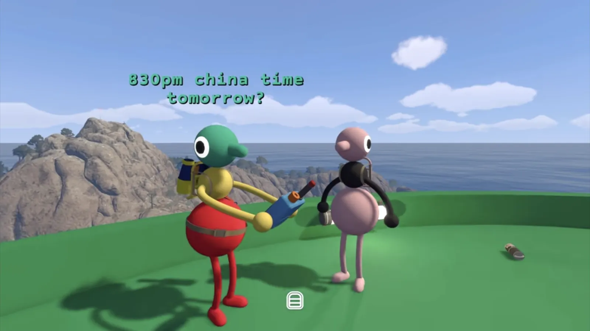
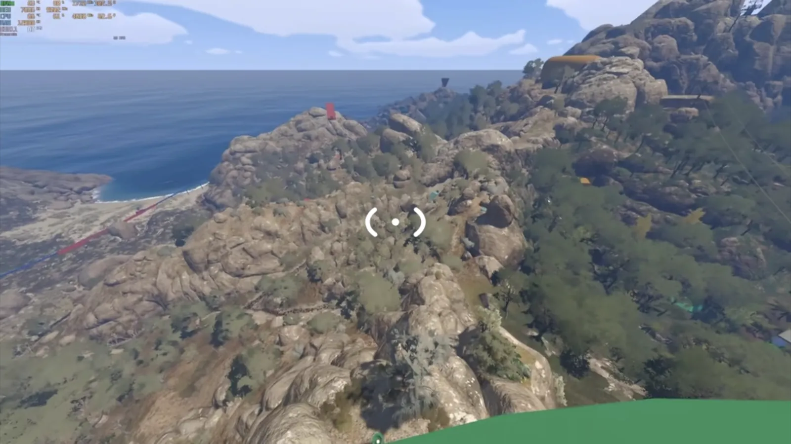
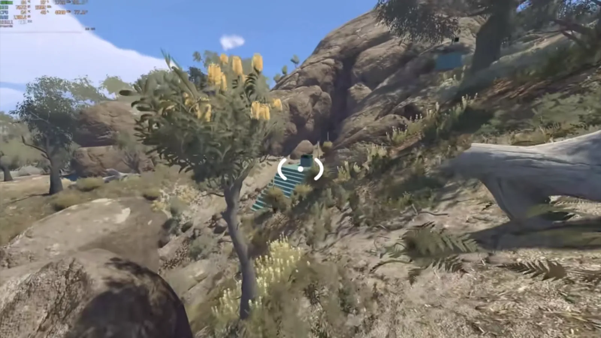

Illustrated guide
Green Seat Speaker Puzzle — The Fastest Route
The green seat speaker puzzle hands you no obvious clue at all. All you get is a chair with a pair of headphones that plays music. Unlocking it takes a few set steps and a trip to a specific spot on the map. Below is the whole thing, plus the fastest route we've settled on — you don't have to wander the forest guessing like we did.
- 01
What the puzzle is

The room holds no clue to read, so you have to work it out between yourselves — this is a two-player job. This room has nothing in it but a chair and a button. The button opens a camouflage box that sits somewhere else entirely, so the whole puzzle relies on you both working together.
Player 1 sits in the chair and does nothing until Player 2 calls it, then presses the button. While seated you hear the music coming through the headphones; the moment you get up it stops.
Player 2 heads to the broadcast station, finds where the camouflage box is, and tells Player 1 to press the button. That's the whole loop, and it pays out the red gourd.
- 02
Work it in the daytime
The green seat speaker puzzle itself is in the blue lighthouse area, while the broadcast station and the box sit in the green lighthouse area. Keep that separation in mind — it's why the two of you have to split up.
Do this during the day. Crawling through the forest with a torch at night makes the route far harder to read than it needs to be.
- 03
Player 1 takes the green seat
The green platform sits below the blue lighthouse, down the seabward side of the hill. On it is the green seat — that's where Player 1 goes.
Player 1 sits down and doesn't leave. The music plays through the headphones, and if you stand up the music stops. Nobody can leave the chair until Player 2 gets to the box.
- 04
Player 2 drops toward the green stairs

The fastest route drops you past these green steps — jump toward the gap between the stairs and the red tower. With Player 1 settled, Player 2 stands at the platform's edge and jumps toward the gap between the green stairs and the red tower. This is the fastest route — no searching needed.

Jump from the platform's edge and this is your landing spot — the green steps in the rock. Keep dropping down. On the way you'll pass a green sign and the green stairs, and once you keep moving you'll spot a green sign by a big rock. You've found it. There's no easier way in.
- 05
Find the camouflage box

The box sits in the gap between the two rocks, and the microphone stands right beside it. The camouflage box is tucked in the shade between the two rocks. If you can't hear any music at all, you're still a long way from the broadcast station — the sound is your only guide.
The box has a red-and-blue microphone on a stand next to it. Talk into it to tell Player 1 to press the button; that opens the box. Player 2 pulls out the red gourd, and the collection is done.
That's the whole loop: one player holds the green seat, the other follows the stairs and the microphone down to the box, and the red gourd is yours. The fastest route means someone stays parked in the chair while the other drops straight off the platform — no torch, no wandering.